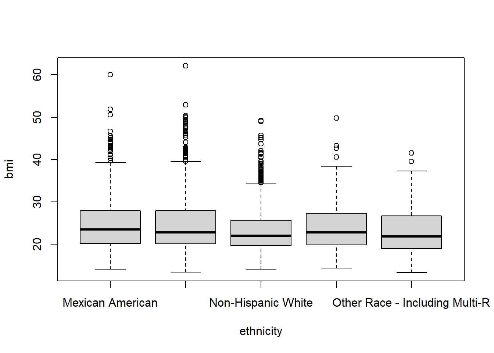

library(tidyverse)
nhanes_processed <- read_csv(file.choose())
#| label: preview-data
#| echo: false
#| message: false
DT::datatable(head(nhanes_processed,200), rownames = FALSE, options = list(pageLength = 10, scrollX=T), class = 'white-space: nowrap' )Week 3: Plotting
Data
We will be picking up where we left off with the data last week. If you have the data at hand you’re all set, or you can download the week 2 data here. You should check that the categorical variables you added last week are correctly encoded before continuing.
First steps with ggplot2
As you saw in this week’s reading, ggplot2 utilizes a specific syntax for creating plots. We can summarize it as:
ggplot(data = <DATA>, mapping = aes(<MAPPINGS>)) + <GEOM_FUNCTION>()Where we define a dataset, choose which variables map to which aspects of the plot, and then choose the geom() or type of plot to draw.
Let’s plug the NHANES dataset into a plot.
ggplot(nhanes_processed)- 1
-
dataandmappingare positional arguments in theggplotfunction, so we don’t have to name them. However, it can be good practice to include the argument names so that it’s immediately obvious what each argument is.

Since we haven’t told ggplot what we want to display, we just get a blank plot. If we add some mappings for the x and y axes:
ggplot(nhanes_processed, aes(x = hba1c, y = plasma.glucose))
We now get labeled axes and scales based on the variable range. Finally, we can add a geom(). Let’s make a scatterplot, created with geom_point() in ggplot.
ggplot(nhanes_processed, aes(x = hba1c, y = plasma.glucose)) +
geom_point()Warning: Removed 1893 rows containing missing values (`geom_point()`).
Exercise
- Try making a histogram displaying age in years with
geom_histogram. Do you agree with the authors’ decision in Beheshti et. al. to create two age categories to study this population?
# TODO make your histogram here
ggplot(nhanes_processed,
aes(x = age.years)
) + geom_histogram()`stat_bin()` using `bins = 30`. Pick better value with `binwidth`.
- Typically, the bars in a histogram touch each other. Why is that not the case here? Is there a parameter you could change or different
geom()you could use which might work better in this situation?
Try your solution out.
# TODO your improved age distribution code hereMapping Variables
Beyond the actual axes we can use mappings to encode variables as various aspects of a plot. Some of the most commonly used other mapping types are shape, fill, color, size, and linetype.
For instance, let’s take our scatterplot from before and color the points by diabetic status.
ggplot(nhanes_processed, aes(x = hba1c, y = plasma.glucose, color = diabetes)) +
geom_point() Warning: Removed 1893 rows containing missing values (`geom_point()`).
Remember we can also change parts of the plot outside of aes() to have them not depend on any variable.
ggplot(nhanes_processed, aes(x = hba1c, y = plasma.glucose, color = diabetes)) +
geom_point(size = 2.5) Warning: Removed 1893 rows containing missing values (`geom_point()`).
We can also have a single variable encoded into multiple parts of the plot.
ggplot(nhanes_processed, aes(x = hba1c, y = plasma.glucose, color = diabetes, shape = diabetes)) +
geom_point(size = 2.5) Warning: Removed 1893 rows containing missing values (`geom_point()`).
Exercise
- Try coloring your boxplot from before by
age.years. What happens? What about when you useage.cat? Remember to usefillinstead ofcolorfor shapes like boxplots.
# We can't color by age since it's numeric, ggplot gives an error.
ggplot(nhanes_processed, aes(x = ethnicity, y = bmi, fill = age.years)) +
geom_boxplot()Warning: Removed 25 rows containing non-finite values (`stat_boxplot()`).Warning: The following aesthetics were dropped during statistical transformation: fill
ℹ This can happen when ggplot fails to infer the correct grouping structure in
the data.
ℹ Did you forget to specify a `group` aesthetic or to convert a numerical
variable into a factor?ggplot(nhanes_processed, aes(x = ethnicity, y = bmi, fill = age.cat)) +
geom_boxplot()Warning: Removed 25 rows containing non-finite values (`stat_boxplot()`).
- Now try flipping which variables are encoded in
xandfill. Which version do you think works better?
ggplot(nhanes_processed, aes(x = age.cat, y = bmi, fill = ethnicity)) +
geom_boxplot()Warning: Removed 25 rows containing non-finite values (`stat_boxplot()`).
Customizing Plots
Taking a figure all the way to publication-quality can require careful fine tuning. ggplot has a variety of useful themes and other ways to improve a figure’s appearance and readability.
Here’s an example of some of what you can do. Note that changing the fig.width setting for the code block will not effect how the image looks when exported.
#Maybe we want a color scheme from a Wes Anderson movie:
library(wesanderson)
#Note that this font import can take multiple minutes to run
pal <- wes_palette("Zissou1", 5, type = "continuous")
ggplot(nhanes_processed, aes(x = hba1c, fill = ethnicity)) +
geom_histogram() +
theme_minimal() +
ggtitle("HbA1C stratified by ethnicity") +
xlab("HbA1C (%)") +
ylab("Count") +
scale_fill_manual(values = pal, name = "Ethnicity") +
theme(text = element_text(size=18))`stat_bin()` using `bins = 30`. Pick better value with `binwidth`.Warning: Removed 298 rows containing non-finite values (`stat_bin()`).